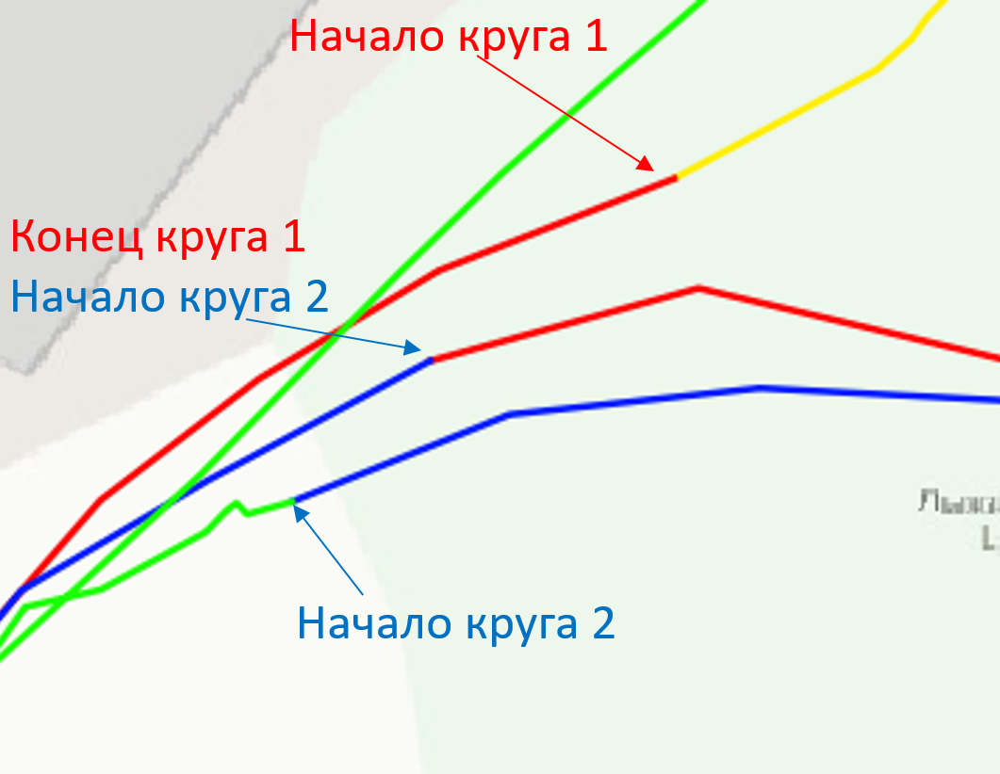
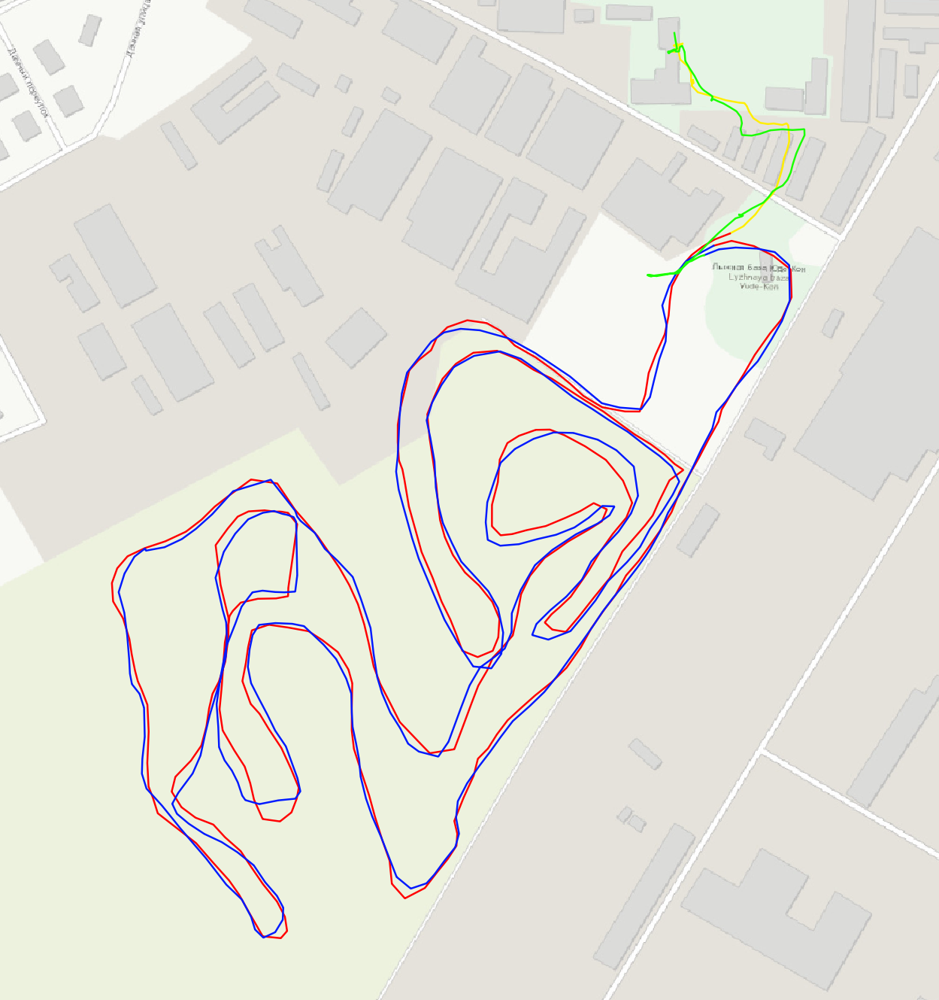
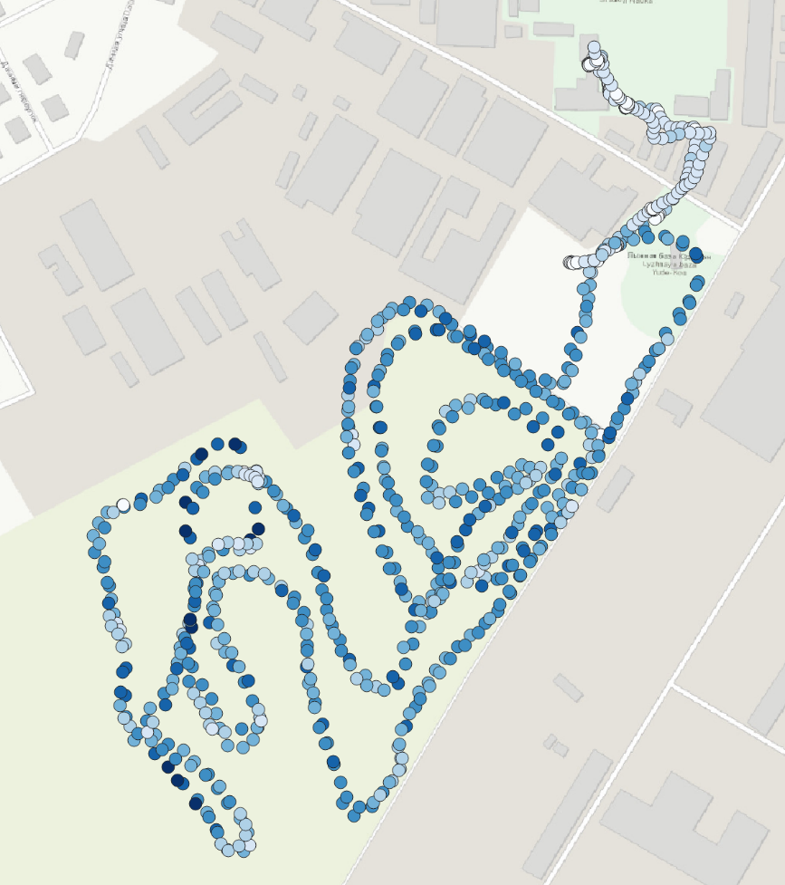
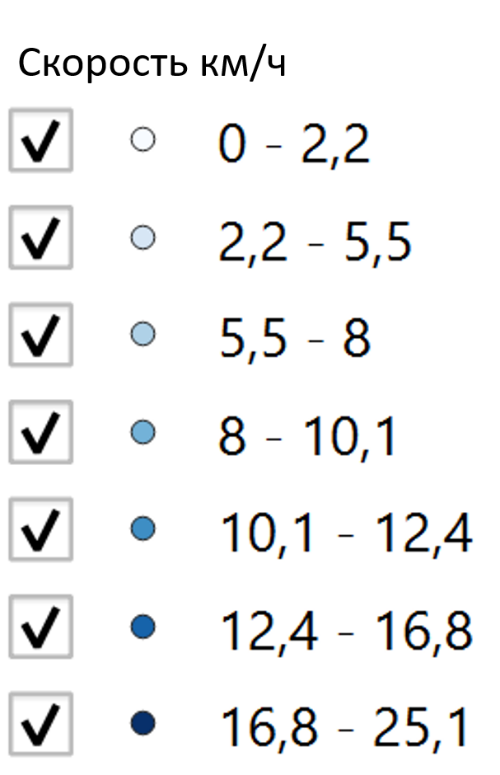
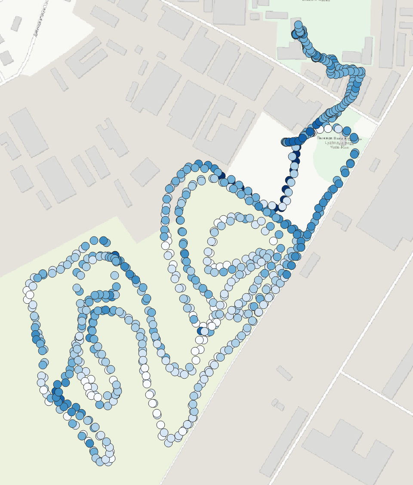
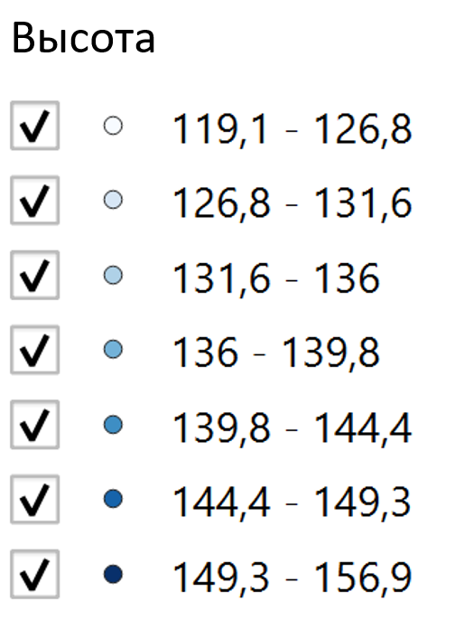
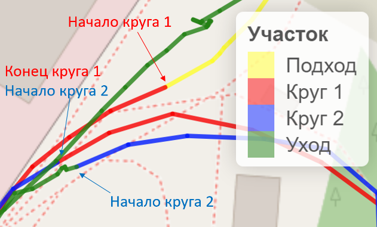
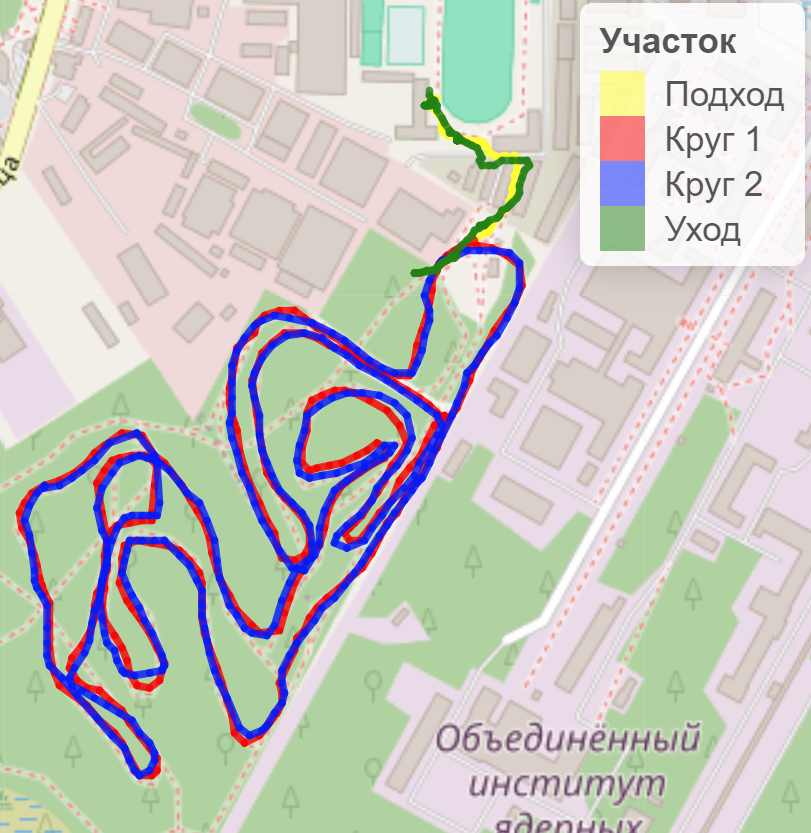
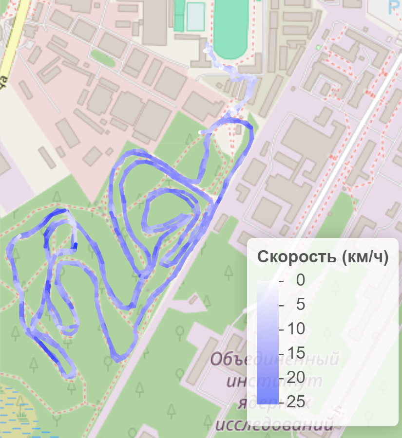
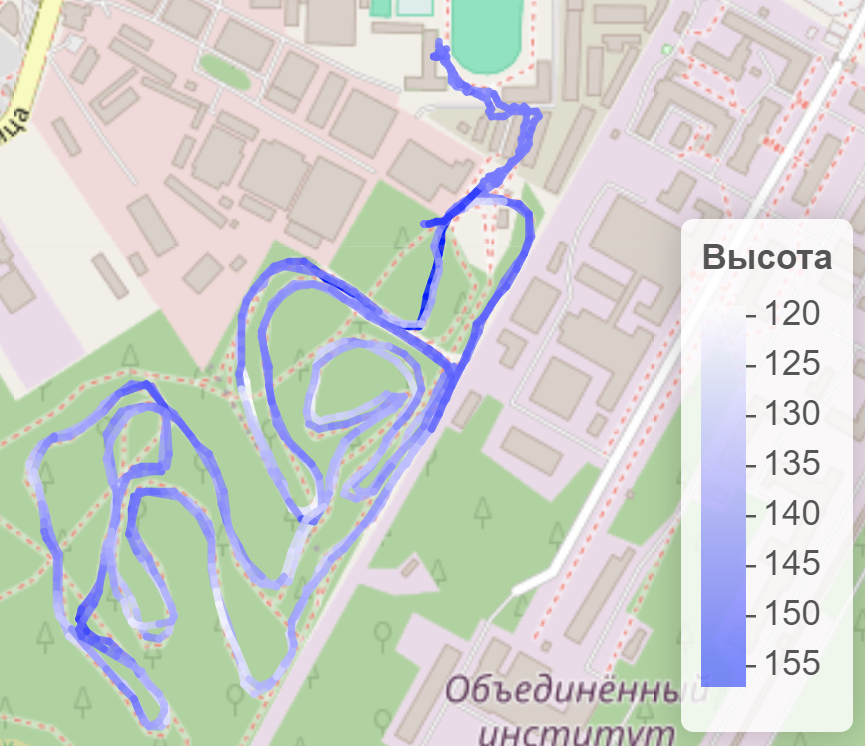

| 1 круг | 2 круг | |
|---|---|---|
| Время начала круга | 11:09:03 | 11:36:09 |
| Время окончания круга | 11:36:09 | 12:02:45 |
| Длина круга | 4 510,2 м | 4 523,9 м |
| Средняя скорость прохождения круга | 9,9 км/ч | 10,2 км/ч |
| Максимальное удаление от базы | 763,8 м | 764,6 м |
QGIS
Алгоритм работы: главный метод – смотрим на карту и помечаем
Время начала и конца: определялось исходя из положения точек относительно друг друга, а также исходя из скорости
Длина круга: были созданы новые точечные слои, в них была перенесена информация из оригинальной таблицы атрибутов в диапазоне начала и конца участка: подход (жёлтый), уход(зелёный) и круги 1(красный) и 2(синий). Потом был построен трек и посчитана его длина.
Средняя скорость: среднее значение скорости в диапазоне точек, соответствующих участкам трека.
Максимально удаление: померено линейкой между начальной точкой и самой отдалённой точке трека.



R
| 1 круг | 2 круг | |
|---|---|---|
| Время начала круга | 11:09:03 | 11:36:14 |
| Время окончания круга | 11:36:14 | 12:02:45 |
| Длина круга | 4 522,3 м | 4 511,6 м |
| Средняя скорость прохождения круга | 9,9 км/ч | 10,2 км/ч |
| Максимальное удаление от базы | 763,6 м | 764,4 м |
Алгоритм работы: главный метод – работа с кодом
Время начала и конца: выбираю пороговое значение скорости (8), а также отсекаю точки на базе, где он точно уже идёт и не катается, на основе этого нахожу начало первого круга и конец второго. Потом нахожу ближайшую к ним точку, которая разделяет два круга.
Длина круга: зная точки начала и конца, пишу код для вычисления длины трека
Средняя скорость: зная точки начала и конца, вычисляю среднюю скорость на треке
Максимальное удаление от базы: зная начальную точку и диапазон точек для трека, вычисляю самую отдалённую



QGIS vs R
| 1 круг | 2 круг | |
|---|---|---|
| Время начала круга | 0:00:00 | 0:00:05 |
| Время окончания круга | 0:00:05 | 0:00:00 |
| Длина круга | 12,1 м | 12,3 м |
| Средняя скорость прохождения круга | 0,0 км/ч | 0,0 км/ч |
| Максимальное удаление от базы | 0,2 м | 0,2 м |
Вывод: наверно я сделал, что-то правильно или я сделал всё неправильно, но правильно.